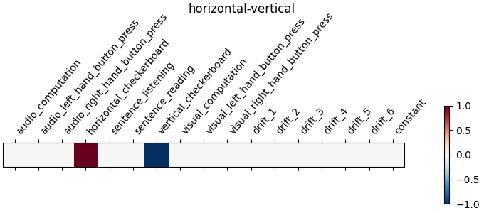
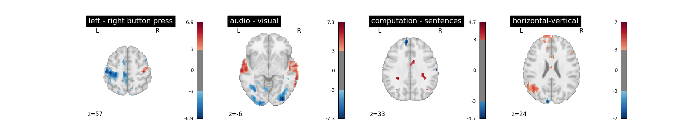
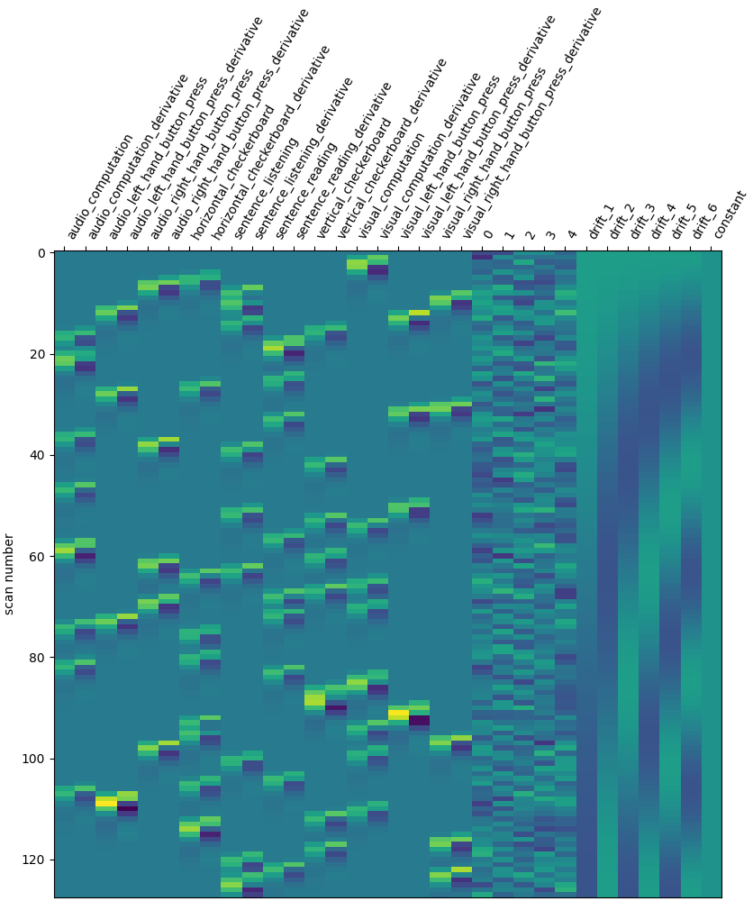

Note
Click here to download the full example code or to run this example in your browser via Binder
9.5.12. Understanding parameters of the first-level model¶
In this tutorial, we study how first-level models are parametrized for fMRI data analysis and clarify the impact of these parameters on the results of the analysis.
We use an exploratory approach, in which we incrementally include some new features in the analysis and inspect the outcome, i.e. the resulting brain maps.
Readers without prior experience in fMRI data analysis should first run the Intro to GLM Analysis: a single-session, single-subject fMRI dataset tutorial to get a bit more familiar with the base concepts, and only then run this tutorial example.
To run this example, you must launch IPython via ipython --matplotlib in a
terminal, or use jupyter-notebook.
Contents
9.5.12.1. Retrieving the data¶
We use a so-called localizer dataset, which consists in a 5-minutes acquisition of a fast event-related dataset.
from nilearn.datasets import func
data = func.fetch_localizer_first_level()
fmri_img = data.epi_img
Define the paradigm that will be used. Here, we just need to get the provided file.
This task, described in Pinel et al., BMC neuroscience 2007 probes basic functions, such as button presses with the left or right hand, viewing horizontal and vertical checkerboards, reading and listening to short sentences, and mental computations (subractions).
Visual stimuli were displayed in four 250-ms epochs, separated by 100ms intervals (i.e., 1.3s in total). Auditory stimuli were drawn from a recorded male voice (i.e., a total of 1.6s for motor instructions, 1.2-1.7s for sentences, and 1.2-1.3s for subtractions). The auditory or visual stimuli were shown to the participants for passive listening or viewing or responses via button presses in event-related paradigms. Post-scan questions verified that the experimental tasks were understood and followed correctly.
This task comprises 10 conditions:
audio_left_hand_button_press: Left-hand three-times button press, indicated by auditory instruction
audio_right_hand_button_press: Right-hand three-times button press, indicated by auditory instruction
visual_left_hand_button_press: Left-hand three-times button press, indicated by visual instruction
visual_right_hand_button_press: Right-hand three-times button press, indicated by visual instruction
horizontal_checkerboard: Visualization of flashing horizontal checkerboards
vertical_checkerboard: Visualization of flashing vertical checkerboards
sentence_listening: Listen to narrative sentences
sentence_reading: Read narrative sentences
audio_computation: Mental subtraction, indicated by auditory instruction
visual_computation: Mental subtraction, indicated by visual instruction
t_r = 2.4
events_file = data['events']
import pandas as pd
events = pd.read_table(events_file)
events
9.5.12.2. Running a basic model¶
First we specify a linear model. The .fit() functionality of FirstLevelModel function creates the design matrix and the beta maps.
from nilearn.glm.first_level import FirstLevelModel
first_level_model = FirstLevelModel(t_r)
first_level_model = first_level_model.fit(fmri_img, events=events)
design_matrix = first_level_model.design_matrices_[0]
Let us take a look at the design matrix: it has 10 main columns corresponding to 10 experimental conditions, followed by 3 columns describing low-frequency signals (drifts) and a constant regressor.
from nilearn.plotting import plot_design_matrix
plot_design_matrix(design_matrix)
import matplotlib.pyplot as plt
plt.show()
Specification of the contrasts.
For this, let’s create a function that, given the design matrix, generates the corresponding contrasts. This will be useful to repeat contrast specification when we change the design matrix.
import numpy as np
def make_localizer_contrasts(design_matrix):
""" returns a dictionary of four contrasts, given the design matrix"""
# first generate canonical contrasts
contrast_matrix = np.eye(design_matrix.shape[1])
contrasts = dict([(column, contrast_matrix[i])
for i, column in enumerate(design_matrix.columns)])
contrasts['audio'] = (
contrasts['audio_left_hand_button_press']
+ contrasts['audio_right_hand_button_press']
+ contrasts['audio_computation']
+ contrasts['sentence_listening'])
# one contrast adding all conditions involving instructions reading
contrasts['visual'] = (
contrasts['visual_left_hand_button_press']
+ contrasts['visual_right_hand_button_press']
+ contrasts['visual_computation']
+ contrasts['sentence_reading'])
# one contrast adding all conditions involving computation
contrasts['computation'] = (contrasts['visual_computation']
+ contrasts['audio_computation'])
# one contrast adding all conditions involving sentences
contrasts['sentences'] = (contrasts['sentence_listening']
+ contrasts['sentence_reading'])
# Short dictionary of more relevant contrasts
contrasts = {
'left - right button press': (
contrasts['audio_left_hand_button_press']
- contrasts['audio_right_hand_button_press']
+ contrasts['visual_left_hand_button_press']
- contrasts['visual_right_hand_button_press']
),
'audio - visual': contrasts['audio'] - contrasts['visual'],
'computation - sentences': (contrasts['computation'] -
contrasts['sentences']
),
'horizontal-vertical': (contrasts['horizontal_checkerboard'] -
contrasts['vertical_checkerboard'])
}
return contrasts
Let’s look at these computed contrasts:
‘left - right button press’: probes motor activity in left versus right button presses
‘horizontal-vertical’: probes the differential activity in viewing a horizontal vs vertical checkerboard
‘audio - visual’: probes the difference of activity between listening to some content or reading the same type of content (instructions, stories)
‘computation - sentences’: looks at the activity when performing a mental comptation task versus simply reading sentences.
contrasts = make_localizer_contrasts(design_matrix)
from nilearn.plotting import plot_contrast_matrix
for key, values in contrasts.items():
plot_contrast_matrix(values, design_matrix=design_matrix)
plt.suptitle(key)
plt.show()


- 
9.5.12.3. A first contrast estimation and plotting¶
As this script will be repeated several times, we encapsulate model fitting and plotting in a function that we call when needed.
from nilearn import plotting
def plot_contrast(first_level_model):
""" Given a first model, specify, estimate and plot the main contrasts"""
design_matrix = first_level_model.design_matrices_[0]
# Call the contrast specification within the function
contrasts = make_localizer_contrasts(design_matrix)
fig = plt.figure(figsize=(11, 3))
# compute the per-contrast z-map
for index, (contrast_id, contrast_val) in enumerate(contrasts.items()):
ax = plt.subplot(1, len(contrasts), 1 + index)
z_map = first_level_model.compute_contrast(
contrast_val, output_type='z_score')
plotting.plot_stat_map(
z_map, display_mode='z', threshold=3.0, title=contrast_id,
axes=ax, cut_coords=1)
Let’s run the model and look at the outcome.
plot_contrast(first_level_model)
plt.show()
9.5.12.4. Changing the drift model¶
The drift model is a set of slow oscillating functions (Discrete Cosine transform) with a cut-off frequency. To remove spurious low-frequency effects related to heart rate, breathing and slow drifts in the scanner signal, the standard cutoff frequency is 1/128 Hz ~ 0.01Hz. This is the default value set in the FirstLevelModel function. Depending on the design of the experiment, the user may want to change this value. The cutoff period (1/high_pass) should be set as the longest period between two trials of the same condition multiplied by 2. For instance, if the longest period is 32s, the high_pass frequency shall be 1/64 Hz ~ 0.016 Hz. Note that the design matrix has more columns to model drifts in the data.
Out:
<AxesSubplot:label='conditions', ylabel='scan number'>
Does the model perform worse or better ?
plot_contrast(first_level_model)
plt.show()
We notice however that this model performs rather poorly.
Another solution is to remove these drift terms. Maybe they’re simply useless. This is done by setting drift_model to None.
first_level_model = FirstLevelModel(t_r, drift_model=None)
first_level_model = first_level_model.fit(fmri_img, events=events)
design_matrix = first_level_model.design_matrices_[0]
plot_design_matrix(design_matrix)
plot_contrast(first_level_model)
plt.show()


Is it better than the original? No!
Note that the design matrix has changed with no drift columns. the event columns, on the other hand, haven’t changed.
Another alternative to get a drift model is to specify a set of polynomials. Let’s take a basis of 5 polynomials.
first_level_model = FirstLevelModel(t_r, drift_model='polynomial',
drift_order=5)
first_level_model = first_level_model.fit(fmri_img, events=events)
design_matrix = first_level_model.design_matrices_[0]
plot_design_matrix(design_matrix)
plot_contrast(first_level_model)
plt.show()


Is it good? No better, no worse. Let’s turn to another parameter.
9.5.12.5. Changing the hemodynamic response model¶
This is the filter used to convert the event sequence into a reference BOLD signal for the design matrix.
The first thing that we can do is to change the default model (the so-called Glover hrf) for the so-called canonical model of SPM –which has a slightly weaker undershoot component.
first_level_model = FirstLevelModel(t_r, hrf_model='spm')
first_level_model = first_level_model.fit(fmri_img, events=events)
design_matrix = first_level_model.design_matrices_[0]
plot_design_matrix(design_matrix)
plot_contrast(first_level_model)
plt.show()

- 
No strong –positive or negative– effect.
9.5.12.5.1. Adding a time derivative to the design¶
There seems to be something here. Maybe we could try to go one step further: using not only the so-called canonical hrf, but also its time derivative. Note that in that case, we still perform the contrasts and obtain statistical significance for the main effect — not the time derivative. This means that the inclusion of a time derivative in the design matrix has the sole effect of discounting timing misspecification from the error term, which would decrease the estimated variance and enhance the statistical significance of the effect. Is that the case?
first_level_model = FirstLevelModel(t_r, hrf_model='spm + derivative')
first_level_model = first_level_model.fit(fmri_img, events=events)
design_matrix = first_level_model.design_matrices_[0]
plot_design_matrix(design_matrix)
plot_contrast(first_level_model)
plt.show()


Not a huge effect, but rather positive overall. We could keep that one.
Note that a benefit of this approach is that we can test which voxels are well explained by the derivative term, hinting at misfit regions, a possibly valuable information. This is implemented by an F-test on the time derivative regressors.
contrast_val = np.eye(design_matrix.shape[1])[1:21:2]
plot_contrast_matrix(contrast_val, design_matrix)
z_map = first_level_model.compute_contrast(
contrast_val, output_type='z_score')
plotting.plot_stat_map(
z_map, display_mode='z', threshold=3.0, title='effect of time derivatives')
plt.show()

There seems to be something here. Maybe we could adjust the timing, by increasing the slice_time_ref parameter from 0 to 0.5. Now the reference for model sampling is not the beginning of the volume acquisition, but the middle of it.
first_level_model = FirstLevelModel(t_r, hrf_model='spm + derivative',
slice_time_ref=0.5)
first_level_model = first_level_model.fit(fmri_img, events=events)
z_map = first_level_model.compute_contrast(
contrast_val, output_type='z_score')
plotting.plot_stat_map(
z_map, display_mode='z', threshold=3.0,
title='effect of time derivatives after model shift')
plt.show()

The time derivatives regressors capture less signal: it’s better like that.
We can also consider adding the so-called dispersion derivative to capture some mis-specification in the shape of the hrf.
This is done by specifying hrf_model=’spm + derivative + dispersion’.
first_level_model = FirstLevelModel(t_r, slice_time_ref=0.5,
hrf_model='spm + derivative + dispersion')
first_level_model = first_level_model.fit(fmri_img, events=events)
design_matrix = first_level_model.design_matrices_[0]
plot_design_matrix(design_matrix)
plot_contrast(first_level_model)
plt.show()

Not a huge effect. For the sake of simplicity and readability, we can drop that one.
9.5.12.6. The noise model: ar(1), ols, or higher order ar?¶
So far,we have implicitly used a lag-1 autoregressive model—aka ar(1)—for the temporal structure of the noise. An alternative choice is to use an ordinary least squares model (ols) that assumes no temporal structure (time-independent noise) or to use an autoregressive model with a higher order, for example a third order autoregressive model—aka ar(3).
First we recompute using the spm + derivative hrf model, the slice_time_ref parameter chosen above, and explicitly set the noise model to be ar(1).
first_level_model = FirstLevelModel(t_r, slice_time_ref=0.5,
hrf_model='spm + derivative',
noise_model='ar1')
first_level_model = first_level_model.fit(fmri_img, events=events)
plot_contrast(first_level_model)
plt.show()

Next we change the noise model to ols and observe the difference relative to the ar(1) model.
first_level_model = FirstLevelModel(t_r, slice_time_ref=0.5,
hrf_model='spm + derivative',
noise_model='ols')
first_level_model = first_level_model.fit(fmri_img, events=events)
plot_contrast(first_level_model)
plt.show()

While the difference is not obvious you should rather stick to the ar(1) model, which is arguably more accurate.
Alternatively we can include more terms in the autoregressive model to account for greater temporal complexity in the noise structure.
first_level_model = FirstLevelModel(t_r, slice_time_ref=0.5,
hrf_model='spm + derivative',
noise_model='ar3')
first_level_model = first_level_model.fit(fmri_img, events=events)
plot_contrast(first_level_model)
plt.show()
This noise model arguably reduces the amount of spurious activity. However, as the difference is not obvious you may wish to stick to the ar(1) model, which is computationally more efficient.
9.5.12.7. Removing confounds¶
A problematic feature of fMRI is the presence of uncontrolled confounds in the data, due to scanner instabilities (spikes) or physiological phenomena, such as motion, heart and respiration-related blood oxygenation fluctuations. Side measurements are sometimes acquired to characterize these effects. Here we don’t have access to those. What we can do instead is to estimate confounding effects from the data themselves, using the CompCor approach, and take those into account in the model.
For this we rely on the so-called high_variance_confounds routine of Nilearn.
from nilearn.image import high_variance_confounds
confounds = pd.DataFrame(high_variance_confounds(fmri_img, percentile=1))
first_level_model = FirstLevelModel(t_r, hrf_model='spm + derivative',
slice_time_ref=0.5)
first_level_model = first_level_model.fit(fmri_img, events=events,
confounds=confounds)
design_matrix = first_level_model.design_matrices_[0]
plot_design_matrix(design_matrix)
plot_contrast(first_level_model)
plt.show()
- 

Note the five additional columns in the design matrix.
The effect on the activation maps is complex: auditory/visual effects are killed, probably because they were somewhat colinear to the confounds. On the other hand, some of the maps become cleaner (horizontal-vertical, computation) after this addition.
9.5.12.8. Smoothing¶
Smoothing is a regularization of the model. It has two benefits: decrease the noise level in images, and reduce the discrepancy between individuals. The drawback is that it biases the shape and position of activation. Here, we simply illustrate the statistical gains. We use a mild smoothing of 5mm full-width at half maximum (fwhm).
first_level_model = FirstLevelModel(
t_r, hrf_model='spm + derivative', smoothing_fwhm=5,
slice_time_ref=0.5).fit(fmri_img, events=events, confounds=confounds)
design_matrix = first_level_model.design_matrices_[0]
plot_design_matrix(design_matrix)
plot_contrast(first_level_model)
plt.show()


The design is unchanged but the maps are smoother and more contrasted.
9.5.12.9. Masking¶
Masking consists in selecting the region of the image on which the model is run: it is useless to run it outside of the brain.
The approach taken by FirstLeveModel is to estimate it from the fMRI data itself when no mask is explicitly provided. Since the data have been resampled into MNI space, we can use instead a mask of the grey matter in MNI space. The benefit is that it makes voxel-level comparisons easier across subjects and datasets, and removes non-grey matter regions, in which no BOLD signal is expected. The downside is that the mask may not fit very well this particular data.
data_mask = first_level_model.masker_.mask_img_
from nilearn.datasets import fetch_icbm152_brain_gm_mask
icbm_mask = fetch_icbm152_brain_gm_mask()
from nilearn.plotting import plot_roi
plt.figure(figsize=(16, 4))
ax = plt.subplot(121)
plot_roi(icbm_mask, title='ICBM mask', axes=ax)
ax = plt.subplot(122)
plot_roi(data_mask, title='Data-driven mask', axes=ax)
plt.show()
For the sake of time saving, we resample icbm_mask to our data. For this we call the resample_to_img routine of Nilearn. We use interpolation = ‘nearest’ to keep the mask as a binary image.
from nilearn.image import resample_to_img
resampled_icbm_mask = resample_to_img(icbm_mask, data_mask,
interpolation='nearest')
Impact on the first-level model.
first_level_model = FirstLevelModel(
t_r, hrf_model='spm + derivative', smoothing_fwhm=5, slice_time_ref=0.5,
mask_img=resampled_icbm_mask).fit(
fmri_img, events=events, confounds=confounds)
design_matrix = first_level_model.design_matrices_[0]
plot_design_matrix(design_matrix)
plot_contrast(first_level_model)
plt.show()


Note that it removed spurious spots in the white matter.
9.5.12.10. Conclusion¶
Interestingly, the model used here seems quite resilient to manipulation of modeling parameters: this is reassuring. It shows that Nilearn defaults (‘cosine’ drift, cutoff=128s, ‘glover’ hrf, ar(1) model) are actually reasonable. Note that these conclusions are specific to this dataset and may vary with other ones.
Total running time of the script: ( 4 minutes 2.642 seconds)